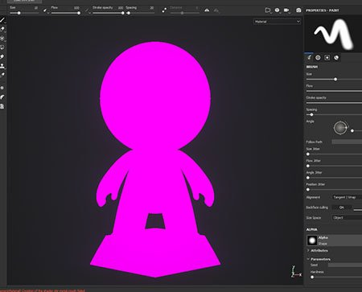

The mesh can appear pink inside the viewport because the shader used to draw it doesn't compile anymore (as mentioned by the log window ). This can be caused by an outdated shader which doesn't support the latest version of the shader API.
Here is how to fix it: